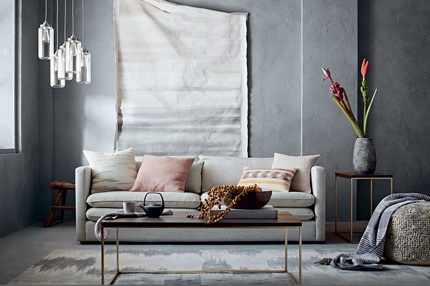
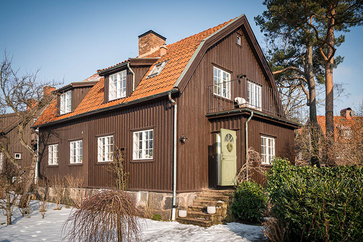
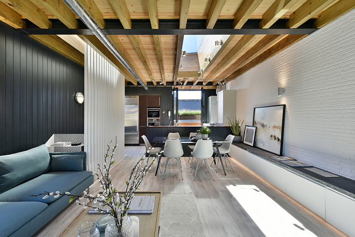

Мы как-то писали о красивых детских комнатах в портфолио американского декоратора Kate S Jordan, но этим ее талант не ограничивается — она с тем же успехом оформляет и «взрослые» интерьеры для ведущих брендов и компаний. Интересно, что Kate живет и работает в Нью-Йорке, но стиль ее интерьеров можно отнести скорее к скандинавскому. В любом случае, ее работы радуют глаз и дарят море вдохновений!
 скандинавский домик с черным фасадомВ этом уютном домике в тихом пригороде Стокгольма смешались элементы дизайна традиционных скандинавских домов и современных шведских городских квартир. С виду это типичный частный сектор Скандинавии — черный фасад из дерева, с уютными окнами в белом обрамлении, небольшой верандой и милым открытым балконом. Внутри скромная деревянная отделка стен и потолка, а также классические обои прекрасно сосуществует с современной мебелью, плиткой и фотографиями в рамках. Приятного просмотра!
 преображение дома в лондоне: из магазина шин в современные апартаментыРаньше в этом здании на Estcourt Road в Лондоне продавали шины, но в 2017 году дом обрел новую жизнь — на последнем этаже расположись стильные и современные апартаменты. В основу легло сочетание черного, белого и серого цветов с вкраплениями теплых оттенков. В квартире не так много окон, но здесь светло в том числе благодаря объемному окну в потолке гостиной. Интерьер не перегружен цветовыми сочетаниями и сложными формами, но при этом он получился очень объемным, рельефным: дерево, перегородки, белая кирпичная стена, мозаика в ванной — всё это делает квартиру интересной. Так современный стиль вдохнул новую жизнь в старое здание!
 1 2 3...
155